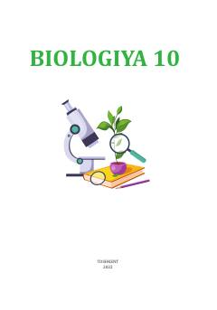

1B10-sinf uchun molekulyar biologiya va tirik tizimlar asoslarini o'rgatuvchi darslik.
Ushbu darslik 10-sinf o'quvchilari uchun mo'ljallangan bo'lib, molekulyar biologiya asoslari, tirik organizmlarning tuzilishi va hayotning iyerarxik darajalarini o'rgatadi. Kitobda biotexnologiya, hujayra tuzilishi va biologik tizimlar haqida batafsil ma'lumotlar berilgan.